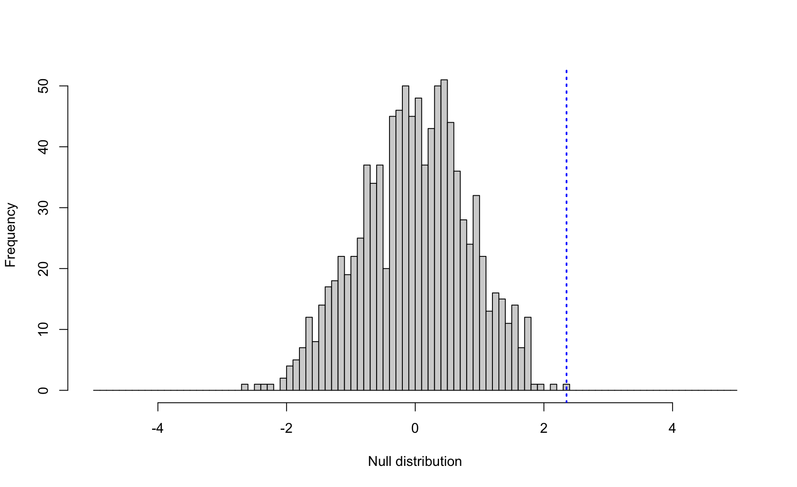
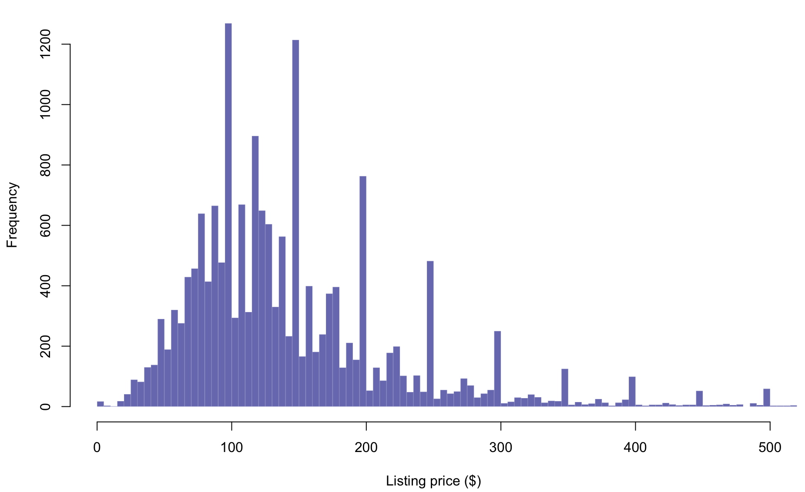

Module 19 Joining datasets
Learning goals
- How to join together two related datasets efficiently in
R
Joining: the basics
It’s not unusual to have data for a project spread out across multiple datasets. The data are all related, but the fact that they are ‘packaged’ separately into different files can things difficult. To work with such relational data in R, you eventually need to merge – or join – them into a single dataframe.
For example, say you are studying the economics of professional basketball. In one dataframe, df1, you have the net worth of famous players, in millions USD…
player <- c("LeBron","Mugsy","Shaq","Jordan","Hakeem","Kobe","Stockton")
worth <- c(500, 14, 400, 1600, 200, 600,40)
df1 <- data.frame(player,worth)
df1
player worth
1 LeBron 500
2 Mugsy 14
3 Shaq 400
4 Jordan 1600
5 Hakeem 200
6 Kobe 600
7 Stockton 40…and in a second dataframe, df2, you have their height.
player <- c("Jordan","Shaq","Magic","Hakeem","Stockton","Mugsy","LeBron")
height <- c(78,85,81,84,73,63,81)
df2 <- data.frame(player,height)
df2
player height
1 Jordan 78
2 Shaq 85
3 Magic 81
4 Hakeem 84
5 Stockton 73
6 Mugsy 63
7 LeBron 81Is there a correlation between these players’ net worth and their height? To answer this question you need to join these two datasets together. But the two datasets don’t contain the exact same roster of players, and the players are not in the same order. Hmm. Is there an efficient way to join these two datasets?
Yes! Thanks to the family of join() functions from the package dplyr.
install.packages("dplyr")These join() functions relate two dataframes together according to a common column name. In order for these functions to work, each dataframe has to have a column of the same name. In the case of df1 and df2, that shared column is player.
There are four join() functions you should know how to use:
left_join() joins the two datasets together, keeping all rows in the first dataframe you feed it.
left_join(df1,df2,by="player")
player worth height
1 LeBron 500 81
2 Mugsy 14 63
3 Shaq 400 85
4 Jordan 1600 78
5 Hakeem 200 84
6 Kobe 600 NA
7 Stockton 40 73Notice that none of the players unique to df2 made it into this output; only players in df1 (i.e., the left of the two dataframes listed) remain. Also notice that any player from df1 who was not in df2 has an NA under the column worth. That is how these join() functions work: it fills in the data where it can, and leaves NAs where it can’t.
right_join() keeps all rows in the second dataframe you feed it:
right_join(df1,df2,by="player")
player worth height
1 LeBron 500 81
2 Mugsy 14 63
3 Shaq 400 85
4 Jordan 1600 78
5 Hakeem 200 84
6 Stockton 40 73
7 Magic NA 81full_join() keeping all rows in both dataframes:
full_join(df1,df2,by="player")
player worth height
1 LeBron 500 81
2 Mugsy 14 63
3 Shaq 400 85
4 Jordan 1600 78
5 Hakeem 200 84
6 Kobe 600 NA
7 Stockton 40 73
8 Magic NA 81Finally, inner_join() keeps only the rows that are common to both dataframes:
inner_join(df1,df2,by="player")
player worth height
1 LeBron 500 81
2 Mugsy 14 63
3 Shaq 400 85
4 Jordan 1600 78
5 Hakeem 200 84
6 Stockton 40 73So, to answer our research question about the relationship between player height and net worth, we can now join these data sets and make a nice plot:
df3 <- full_join(df1,df2,by="player")
plot(df3$worth ~ df3$height,
ylim=c(0,1700),xlim=c(60,90),
pch=16,col="dark orange",
xlab="Height (inches)",
ylab="Net worth (millions USD)")
Hmm. Looks like we have an outlier!
Review exercise
This review exercise will involve both the joining skills you learned above as well as many of the skills learned in prior modules. But don’t worry: as with every exercise in this book, every puzzle here can be solved using the skills you have learned in prior modules.
Scenario: A sailing expedition conducted a survey of the whales in the fjords of British Columbia, Canada. That research produced two datasets:
env <- read.csv("./data/whales-environment.csv") ; head(env)
id species year distance seafloor temperature salinity thermocline
1 20140811103 HW 2014 44.1021 352.881 13.49104 25.75687 9.6325
2 20140811104 HW 2014 44.2729 363.563 13.49104 25.75687 9.6325
3 20140811106 HW 2014 46.7883 361.660 13.97642 25.14305 9.7859
4 20140812102 HW 2014 44.9049 317.864 14.11392 22.26935 9.7689
5 20140812104 HW 2014 44.8370 327.717 14.12843 22.21240 9.7689
6 20140812103 HW 2014 44.6589 353.749 14.17754 22.08326 9.7426
stratification euphotic.depth chlorophyll
1 5.0603 18.2951 81.8442
2 5.0603 18.2951 81.8442
3 5.5067 17.2179 66.1236
4 5.2032 18.0307 76.0000
5 5.2032 18.0307 76.0000
6 5.2039 18.0093 75.9543
dive <-read.csv("./data/whales-dives.csv") ; head(dive)
id species behavior prey.volume prey.depth dive.time surface.time
1 20140811106 HW FEED 6.914610 120.76 351.00 237
2 20140812104 HW FEED 7.854762 79.02 281.00 87
3 20140812107 HW FEED 7.385667 96.92 300.25 80
4 20140812109 FW FEED 6.626298 105.87 366.00 189
5 20140812131 HW OTHER 6.356474 123.95 357.00 112
6 20140812140 FW FEED 3.820782 125.51 408.00 182
blow.interval blow.number
1 26.833 10.000
2 14.412 6.667
3 16.000 6.000
4 16.273 12.000
5 25.250 6.000
6 18.789 11.000Each row in these dataframes represent a close encounter with a whale (either a humpback whale, HW, or a fin whale, FW).
The env dataset provides details about the habitat in which the whale was found, such as seafloor depth and the amount of chlorophyll in the water (a proxy for productivity).
The dive dataset provides measurements of whale foraging behaviors, such as dive.time and the number of breaths at the surface (blow.number), as well as the quality of prey in the area (prey.volume and prey.depth).
Note that these two dataframes are linked by the id column, which is a unique code for each whale encounter.
head(dive$id)
[1] 20140811106 20140812104 20140812107 20140812109 20140812131 20140812140head(env$id)
[1] 20140811103 20140811104 20140811106 20140812102 20140812104 20140812103Also note that some ids can be found in both dataframes. These are the encounters for which we have both foraging behavior data as well as environmental data.
Task 1. Summarize your dataset.
Write the necessary code and fill in the
A total of BLANK whale encounters were recorded on BLANK separate days in the years BLANK - BLANK. BLANK encounters were with humpback whales (BLANK % of all encounters), and BLANK were with fin whales (BLANK %). Foraging behavior was recorded in BLANK % of encounters (BLANK % of humpback whale encounters, and BLANK % of fin whale encounters).
Task 2. Research question: Do these two species prefer different seafloor depths?
First, create a nicely formatted histogram that portrays the data relevant to this question.
par(mar=c(4.5,4.5,3,1))
hist(env$seafloor[env$species=="FW"],
xlab="Seafloor depth",
main=NULL,
prob=TRUE,
xlim=c(0,800),
breaks=seq(0,800,length=30),
border=NA,
col=adjustcolor("firebrick",alpha.f=.4))
hist(env$seafloor[env$species=="HW"],
xlim=c(0,800),
breaks=seq(0,800,length=30),
border=NA,
col=adjustcolor("darkblue",alpha.f=.4),
prob=TRUE,
add=TRUE)
Provide the code to test this research question statistically, then write a results statement below.
t.test(x=env$seafloor[env$species=="FW"],
y=env$seafloor[env$species=="HW"])
Welch Two Sample t-test
data: env$seafloor[env$species == "FW"] and env$seafloor[env$species == "HW"]
t = 4.7677, df = 78.011, p-value = 0.000008493
alternative hypothesis: true difference in means is not equal to 0
95 percent confidence interval:
52.84081 128.60877
sample estimates:
mean of x mean of y
445.7157 354.9909 Task 3. Another research question: Is prey volume correlated to chlorophyll concentration?
Whales eat tiny shrimp-like critters named krill, and krill eat tiny organisms called phytoplankton. Chlorophyll is a proxy measurement for the amount of phytoplankton in the area. Based on these datasets, how good are krill at congregating in areas of high chlorophyll concentration?
First, prepare a plot to visualize what you will be comparing:
hwe <- env[env$species=="HW",] ; head(hwe)
id species year distance seafloor temperature salinity thermocline
1 20140811103 HW 2014 44.1021 352.881 13.49104 25.75687 9.6325
2 20140811104 HW 2014 44.2729 363.563 13.49104 25.75687 9.6325
3 20140811106 HW 2014 46.7883 361.660 13.97642 25.14305 9.7859
4 20140812102 HW 2014 44.9049 317.864 14.11392 22.26935 9.7689
5 20140812104 HW 2014 44.8370 327.717 14.12843 22.21240 9.7689
6 20140812103 HW 2014 44.6589 353.749 14.17754 22.08326 9.7426
stratification euphotic.depth chlorophyll
1 5.0603 18.2951 81.8442
2 5.0603 18.2951 81.8442
3 5.5067 17.2179 66.1236
4 5.2032 18.0307 76.0000
5 5.2032 18.0307 76.0000
6 5.2039 18.0093 75.9543
hwd <- dive[dive$species=="HW",] ; head(hwd)
id species behavior prey.volume prey.depth dive.time surface.time
1 20140811106 HW FEED 6.914610 120.76 351.00 237
2 20140812104 HW FEED 7.854762 79.02 281.00 87
3 20140812107 HW FEED 7.385667 96.92 300.25 80
5 20140812131 HW OTHER 6.356474 123.95 357.00 112
7 20140813105 HW FEED 7.472343 104.13 365.00 52
8 20140813107 HW FEED 3.261088 100.19 338.00 20
blow.interval blow.number
1 26.833 10.000
2 14.412 6.667
3 16.000 6.000
5 25.250 6.000
7 18.610 4.500
8 33.322 1.000
nrow(hwe)
[1] 446
hwe <- hwe[hwe$id %in% hwd$id,]
nrow(hwe) ; nrow(hwd)
[1] 89
[1] 89
hwe <- hwe[order(hwe$id),]
hwd <- hwd[order(hwd$id),]
hwd$chl <- hwe$chlorophyll
par(mar=c(4.5,4.5,3,1))
plot(hwd$prey.volume ~ hwd$chl,
xlab="Chlorophyll concentration",
ylab="Prey volume",
pch=16,
cex=.8)
hwlm <- lm(hwd$prey.volume ~ hwd$chl)
abline(hwlm,col="firebrick",lwd=2)
Now carry out your statistical test.
summary(hwlm)
Call:
lm(formula = hwd$prey.volume ~ hwd$chl)
Residuals:
Min 1Q Median 3Q Max
-4.4931 -1.2639 0.3534 1.3358 2.5978
Coefficients:
Estimate Std. Error t value Pr(>|t|)
(Intercept) 5.027405 0.415675 12.10 <0.0000000000000002 ***
hwd$chl 0.008340 0.003723 2.24 0.0276 *
---
Signif. codes: 0 '***' 0.001 '**' 0.01 '*' 0.05 '.' 0.1 ' ' 1
Residual standard error: 1.682 on 87 degrees of freedom
Multiple R-squared: 0.05453, Adjusted R-squared: 0.04366
F-statistic: 5.018 on 1 and 87 DF, p-value: 0.02763